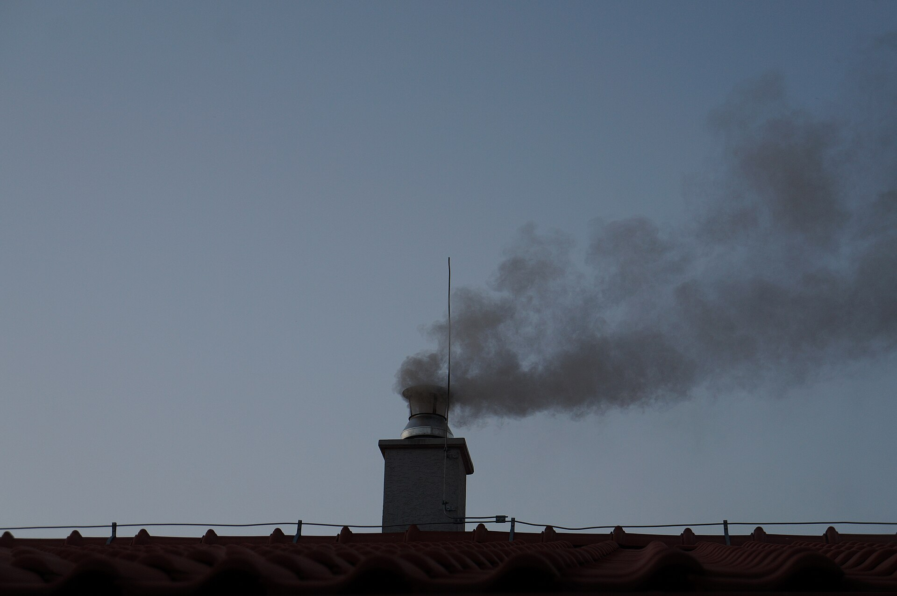
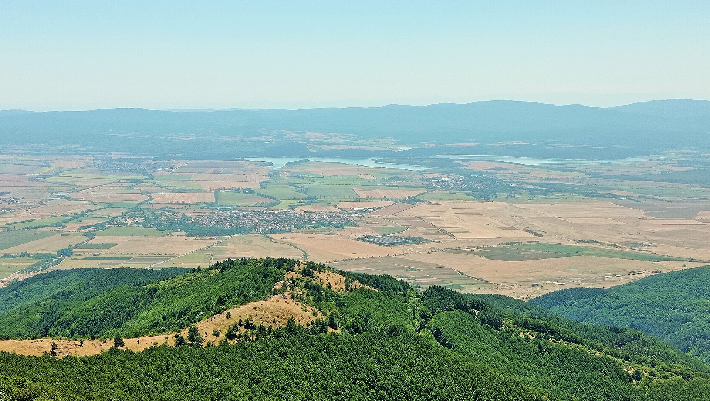
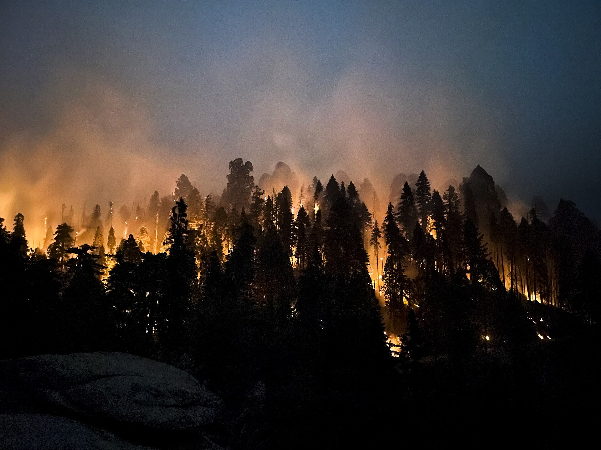

Затворена котловина
Долината е заобиколена от планини. При зимни температурни инверсии студеният въздух остава долу и „заключва“ дима над града.
Казанлъшка долина · Екологична инициатива
Между Балкана и Средна гора лежи една затворена „купа“. Всичко, което изгаряме, изхвърляме и запалваме, остава вътре – при нас.
Виж проблема🌬️ Движи мишката или пръста над мъглата – ти си вятърът. Скролни надолу: колкото повече знаеш и действаш, толкова по-чист става въздухът.
Проблем №1
Всяка зима над града се събира сив похлупак. Причината не е само в това, какво горим, а и в това къде живеем.
Долината е заобиколена от планини. При зимни температурни инверсии студеният въздух остава долу и „заключва“ дима над града.
Изгарянето на твърди горива в домовете е сред основните източници на фини прахови частици в региона, заедно с транспорта.
Източник: РИОСВ – Стара Загора
Фините прахови частици (ФПЧ2.5) са толкова малки, че проникват дълбоко в белите дробове и в кръвта. Най-уязвими са децата и възрастните.
През 2017 г. Съдът на ЕС осъди България по дело на Европейската комисия, защото страната не се справя с мръсния въздух. Решението започва от всеки град.
Източник: „Капитал“



При температурна инверсия студеният въздух остава долу в котловината, а с него и димът от комините.
Интерактивно
Промени навиците на града и виж как се променя въздухът.
* Опростена симулация с образователна цел, а не реални измервания.
Още заплахи

0 дка
Толкова храсти и гори обхвана пожарът между Казанлък и Мъглиж през август 2023 г., заради който бе обявено частично бедствено положение. Повечето пожари започват от човешка небрежност: хвърлен фас, палене на стърнища, искра.
500 дка са колкото 70 футболни игрища (105 × 68 м всяко).

Строителни отпадъци, гуми, пластмаса
В РИОСВ – Стара Загора редовно постъпват сигнали за незаконно изхвърлени отпадъци около Казанлък. Когато такова сметище се запали, димът отново остава в долината.
Подай сигнал в РИОСВ →Затова и решението е тук – започва от това къде изхвърляме една бутилка или една батерия.
Мини игра
Хвани падащите отпадъци и ги пусни в правилния контейнер, преди да паднат на земята. Имаш 60 секунди, а отпадъците падат все по-бързо.
Точки: 0
Време: 60 с
Рекорд: 0
Управление: влачи отпадъка с мишката или с пръст и го пусни върху контейнер. Можеш и само да натиснеш контейнер – в него отива най-ниският отпадък. С клавиатура: ← и → избират контейнер, Enter или ↓ пуска най-ниския отпадък.
Галерия
Розите, язовирът, планините – ето заради какво си струва да пазим въздуха чист. Натисни снимка, за да я видиш в пълен размер.
Твоят ход
Отбележи нещата, които обещаваш да правиш.
0 от 5 обещания